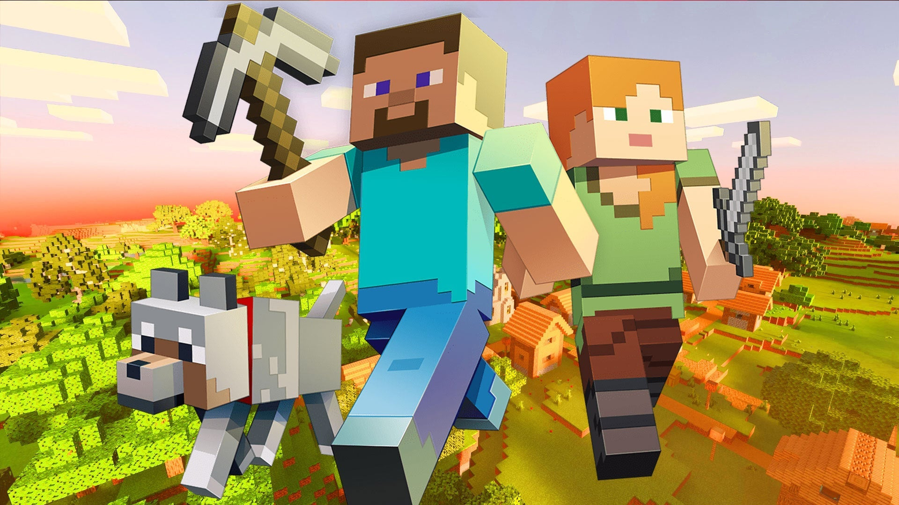

Minecraft es un juego de construcción de mundo abierto inspirado en el juego Infiniminer,creado por Markus Persson, el fundador de la compañía Mojang AB. El juego implica al jugador en la creación y destrucción de distintos tipos de bloques en un entorno en tres dimensiones por medio de un personaje con el que se pueden crear estructuras fantásticas y creaciones artísticas, a lo largo de los distintos servidores multijugador en sus múltiples modos de juego.
VIDEOJUEGO:
MINECRAFT

¿QUE ES?
CARACTERISTICAS
¿COMO CONSEGIRLO?
Minecraft está disponible al público por 19,95€ y se puede jugar en modo individual o multijugador. Una vez comprado, se puede jugar a través de la web o instalando la versión descargable. También se puede jugar a la versión Clásica de forma gratuita. El desarrollo de Minecraft comenzó alrededor del 10 de mayo de 2009 y se comenzaron a aceptar reservas del juego completo el 13 de junio del mismo año. Su lanzamiento oficial fue el 18 de noviembre del 2011. El 17 de diciembre de 2013, Minecraft fue lanzado para PlayStation 3 en la PlayStation Store por 19,99€. El lanzamiento fue similar al de Xbox 360 Edition y fue desarrollado en conjunto con la Xbox 360 Edition por aquel entonces.
MODOS DE JUEGO
Creativo
Supervivencia
Harcode
Aventura
-

-

- 
-